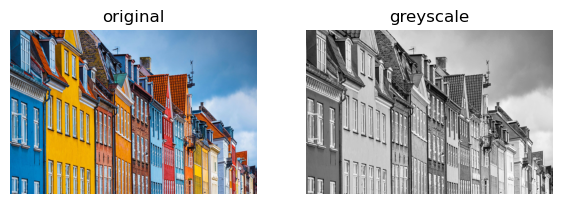
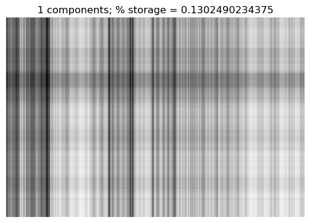
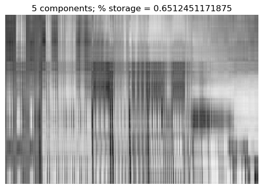
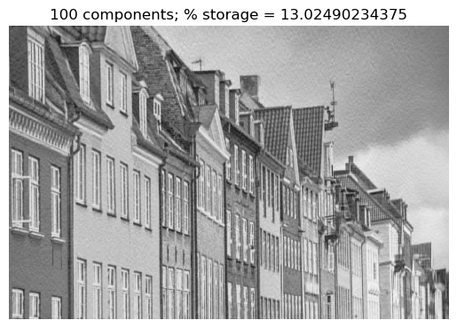

Blog Post: Unsupervised Learning with Linear Algebra
Image Compression with the Singular Value Decomposition
In this blog post, I will compress an image that I like with Singular Value Decomposition. I would try out different numbers of components I keep and see how the quality of the image changes.
Image Choosing
I choose an image of Copenhagen, which the place where I will be studying abroad next Spring, as shown below:
import PILimport urllibfrom matplotlib import pyplot as pltimport numpy as npnp.random.seed(12345)def read_image(url):return np.array(PIL.Image.open(urllib.request.urlopen(url)))url ="https://media.gq-magazine.co.uk/photos/5d139922b363fa43f120ce07/master/pass/Nyhavn-1-gq--4jan17_alamy_b.jpg"img = read_image(url)plt.imshow(img)plt.axis("off")
(-0.5, 1919.5, 1279.5, -0.5)
I then convert this image into to a grey image, using the greyscale function defined below:
fig, axarr = plt.subplots(1, 2, figsize = (7, 3))def to_greyscale(img): """ Turn the original image into grey color. """return1- np.dot(img[...,:3], [0.2989, 0.5870, 0.1140])grey_img = to_greyscale(img)axarr[0].imshow(img)axarr[0].axis("off")axarr[0].set(title ="original")axarr[1].imshow(grey_img, cmap ="Greys")axarr[1].axis("off")axarr[1].set(title ="greyscale")
[Text(0.5, 1.0, 'greyscale')]

As you can see, the image is converted to a grey image, features of color are lost in this process.
SVD Reconstruction
The SVD (singular value decomposition) of a m * n matrix A (the original image matrix) basically knocks off certain features (some numbers) in the original image matrix to compress the image and make it taking less storage space.
The \(m * n\) matrix D carried out through svd operation will have nonzero entries only on its main diagonal. The \(m * m\) matrix U and \(n * n\) matrix V are orthogonal matrices.
I will define a function to show the process of using SVD to compress the image and the reconstructed image with fewer features:
def svd_reconstruct(img, k):""" Reconstruct the image using singular value decomposition of the image matrix """ U, sigma, V = np.linalg.svd(img)# create the D matrix in the SVD D = np.zeros_like(img,dtype=float) # matrix of zeros of same shape as grey_img D[:min(img.shape),:min(img.shape)] = np.diag(sigma) # singular values on the main diagonal# the compressed image matrix U_ = U[:,:k] D_ = D[:k, :k] V_ = V[:k, :] A_ = U_ @ D_ @ V_ # approximation of original image# percent of storage used m = A_.shape[0] n = A_.shape[1] p_storage = (m * k + k + k * n)/ (m*n) *100# since in D, only the diagonals are nonzero# show the reconstructed image plt.imshow(A_, cmap ="Greys") plt.axis("off") plt.title(str(k) +" components"+"; % storage = "+str(p_storage))
We can try this function with the greyscale image, setting components used to be k = 1, which only takes 1 column in U, 1 entry in D, and 1 row in V.
svd_reconstruct(grey_img, k =1)

From the image, we can see that this compressed image loses too many features that it is hard to tell what is in the image. We can increase the number of components and see how it goes.
svd_reconstruct(grey_img, k =5)

For n = 5, it still is very vague, but there are some places in the photo that seem more specific and distinct from other parts.
More Experiments
We can conduct more experiments on SVD reconstruction, changing the component (k) along the way.
svd_reconstruct(grey_img, k =10)
svd_reconstruct(grey_img, 20)
svd_reconstruct(grey_img, 30)
svd_reconstruct(grey_img, 50)
svd_reconstruct(grey_img, 100)

svd_reconstruct(grey_img, 200)
As shown in the above experiments, as the k increases, the reconstructed image became clearer and of higher quality, meanwhile, the percentage of storage space taken also increases as the k increases. When k is set at 30, the image is pretty much distinguishable from the original image by eye.
Conclusion
This blog post shows the process of image compression using singular value decomposition. By knocking off some entries in the matrix of the image, we get to reduce the storage space needed for this image. For the image of Copenhagen specifically, if we only take 30 components, the quality of the reconstructed image is okay (distinguishable), and when k = 200, the quality of the image is pretty much similar as the original greyscale image.